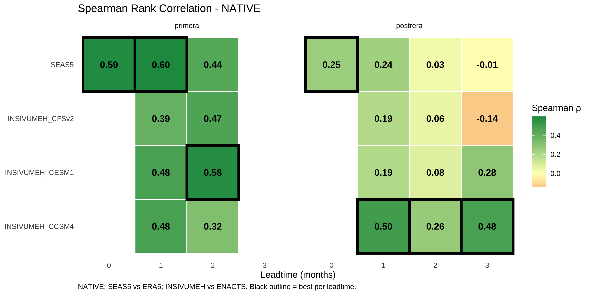
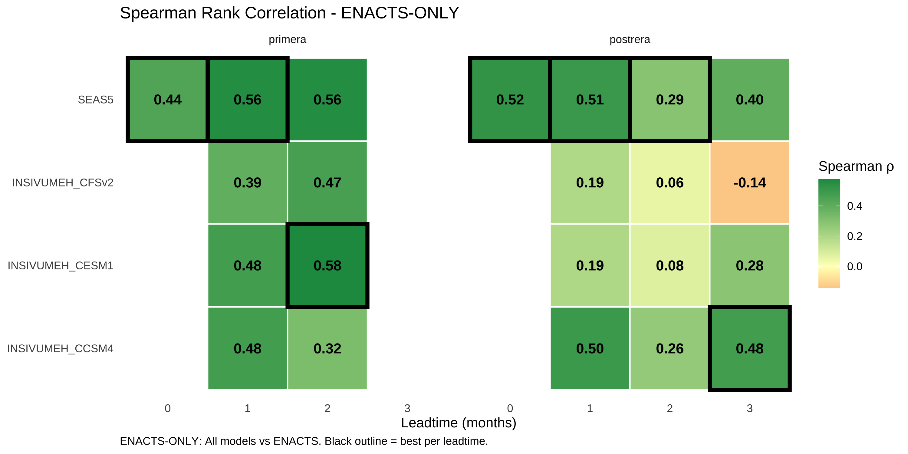
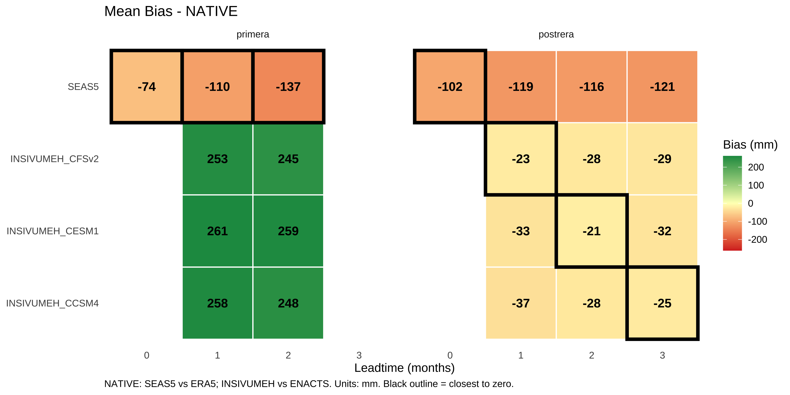
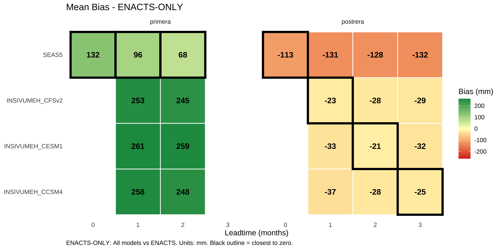

The binary metrics in Chapter 2 (F1 score, precision, recall) provide one lens on forecast skill, but they can be noisy - especially with only ~25 years of data and ~6 drought events. A single misclassified year can swing F1 scores dramatically.
Consider an analogy: judging a temperature forecast as “wrong” for predicting 33°F when it was actually 31°F. The forecast told you to expect cold, even if it missed the freezing threshold. Binary metrics don’t distinguish between a near-miss and being completely off.
This chapter introduces continuous metrics that provide a more nuanced picture:
Correlation metrics measure how well forecasts track year-to-year variability
Error metrics quantify the typical magnitude of forecast errors
ROC-AUC assesses ranking skill: do lower forecasts correspond to drier years?
Of these, ROC-AUC is particularly interpretable for operational decisions. An AUC of 0.75 means: “If you randomly select a drought year and a non-drought year, there’s a 75% chance the forecast correctly identifies which is drier.” This directly answers whether the forecast can discriminate drought from non-drought conditions - the core operational question.
Native Comparison: Each model validated against its “natural” observation source
SEAS5 vs ERA5 (both from ECMWF)
INSIVUMEH vs ENACTS (regional data)
ENACTS-only: All models validated against ENACTS
Allows direct model-to-model comparison
ENACTS is the operational observation source
3.3 Method 1: Correlation Metrics
3.3.1 What It Measures
Correlation measures whether forecasts correctly identify which years are wetter or drier than average. A forecast doesn’t need to predict exact rainfall amounts - it just needs to rank years correctly.
3.3.2 Metrics
Metric
Formula
Interpretation
Spearman ρ
Rank correlation
Did wet years get higher forecasts? Robust to outliers.
Pearson r
Linear correlation
Same, but sensitive to extreme values.
3.3.3 Strengths & Weaknesses
Strengths
Measures interannual variability skill
No threshold dependence
Works on any units (mm or z-scores)
Spearman is robust to outliers
Weaknesses
Doesn’t measure absolute accuracy
A forecast could rank years perfectly but have huge bias
create_metric_heatmap( df_metrics_native, "spearman", "Spearman ρ","Spearman Rank Correlation - NATIVE","NATIVE: SEAS5 vs ERA5; INSIVUMEH vs ENACTS. Black outline = best per leadtime.")

Code
create_metric_heatmap( df_metrics_enacts, "spearman", "Spearman ρ","Spearman Rank Correlation - ENACTS-ONLY","ENACTS-ONLY: All models vs ENACTS. Black outline = best per leadtime.")

3.3.5 Interpretation: Correlation
TipKey Findings
Primera (May-Aug)
SEAS5 shows strong correlation (ρ = 0.56-0.60 at LT0-2)
INSIVUMEH models competitive at LT2, especially CESM1 (ρ = 0.58)
All models beat random (ρ = 0 expected by chance)
Postrera (Sep-Nov)
Weaker correlations across all models (ρ = 0.2-0.5)
SEAS5 slightly better at LT1 (ρ = 0.51)
CCSM4 shows unexpected strength at LT3 (ρ = 0.48)
More variability between leadtimes - less reliable signal
3.4 Method 2: Error Magnitude (RMSE, MAE)
3.4.1 What It Measures
Root Mean Square Error (RMSE) and Mean Absolute Error (MAE) measure how far forecasts deviate from observations in standardized units.
3.4.2 Metrics
Metric
Formula
Interpretation
RMSE
√(mean((fcst - obs)²))
Penalizes large errors more heavily
MAE
mean(|fcst - obs|)
Equal penalty per unit error
3.4.3 Strengths & Weaknesses
Strengths
Measures absolute accuracy
RMSE sensitive to outliers (useful for flagging catastrophic misses)
Hides random error (a model can have zero bias but huge scatter)
Must use raw mm, not z-scores (z-score bias is always ~0 by construction)
WarningImportant Note on Units
Bias must be calculated on raw millimeters, not standardized anomalies. When you standardize to z-scores, you force the mean to zero - so bias between two z-scored series is mathematically guaranteed to be ~0, which is meaningless.
create_bias_heatmap( df_metrics_native,"Mean Bias - NATIVE","NATIVE: SEAS5 vs ERA5; INSIVUMEH vs ENACTS. Units: mm. Black outline = closest to zero.")

Code
create_bias_heatmap( df_metrics_enacts,"Mean Bias - ENACTS-ONLY","ENACTS-ONLY: All models vs ENACTS. Units: mm. Black outline = closest to zero.")

3.5.5 Interpretation: Bias
TipKey Findings
Primera
All models are biased wet (positive bias)
SEAS5: +68 to +132mm too wet
INSIVUMEH models: +244 to +262mm too wet (severe overestimation)
This means forecasts systematically predict more rain than actually falls
Postrera
All models are biased dry (negative bias)
SEAS5: -113 to -132mm too dry
INSIVUMEH models: -21 to -37mm too dry (much smaller bias)
For Postrera, INSIVUMEH has better calibration than SEAS5
3.6 Method 4: Distance-to-Threshold
3.6.1 What It Measures
Instead of binary hit/miss, measure how far each forecast and observation was from their respective drought thresholds. Then correlate these distances.
ROC (Receiver Operating Characteristic) curves measure ranking skill: did lower forecast values correspond to actual drought years?
Unlike binary metrics, ROC doesn’t require choosing a specific threshold. It asks: “If I ranked all years by forecast value, would drought years tend to be at the bottom?”
3.7.2 How to Read an ROC Curve
Diagonal line: Random guessing (AUC = 0.5)
Curve above diagonal: Skill (drought years get lower forecasts)
Curve below diagonal: Inverted skill (drought years get higher forecasts - very bad)
3.7.3 AUC Interpretation
AUC
Interpretation
0.9-1.0
Outstanding
0.8-0.9
Excellent
0.7-0.8
Acceptable
0.5-0.7
Poor
< 0.5
Worse than random
3.7.4 Strengths & Weaknesses
Strengths
Threshold-independent
Measures ranking/discrimination skill
Well-understood statistically
Weaknesses
Doesn’t measure calibration
Can be high even with severe bias
Small sample size (6 drought years) limits precision
No clear winner - different metrics favor different models:
Metric
LT1 Winner
LT2 Winner
Spearman
SEAS5 (0.51)
SEAS5 (0.29)
RMSE
CCSM4 (0.97)
CESM1 (1.17)
Bias
CFSv2 (-23mm)
CESM1 (-21mm)
Dist Corr
CCSM4 (0.51)
CESM1 (0.29)
AUC
SEAS5 (0.69)
CCSM4 (0.79)
If forced to choose one model: CCSM4 has the best average AUC and distance correlation, but no model shows strong, consistent skill.
3.9 Conclusions
3.9.1 Key Takeaways
Primera has genuine forecast skill across multiple metrics. SEAS5 is the clear winner with AUC values around 0.80 - meaning 80% probability of correctly ranking a drought vs non-drought year.
Postrera remains challenging - no model shows consistent, strong skill. AUC values hover near 0.5-0.6 (barely above random guessing). Consider supplementing with monitoring-based triggers.
ROC-AUC provides the clearest picture - it directly answers “can this forecast discriminate drought?” without depending on threshold choices. Binary F1 scores can be variable with small samples; AUC is more stable.
Bias matters operationally - INSIVUMEH models systematically over-predict Primera rainfall by ~250mm. This could be corrected with simple bias adjustment if these models are used.
Correlation and AUC tell consistent stories - both favor SEAS5 for Primera, show weaker skill for Postrera. When multiple metrics agree, we can be more confident in the assessment.